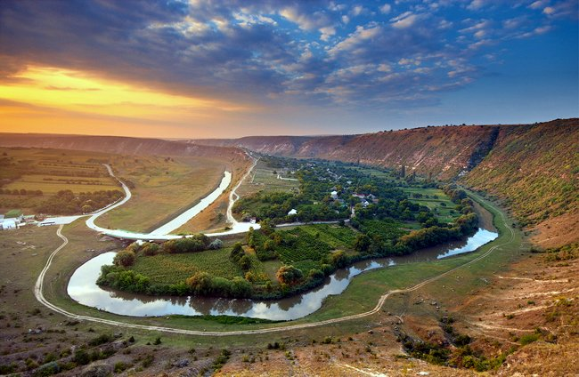
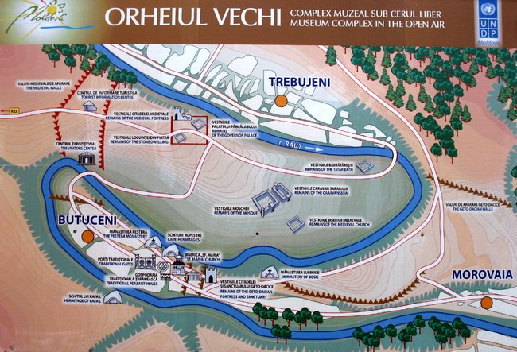
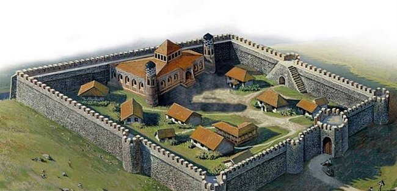
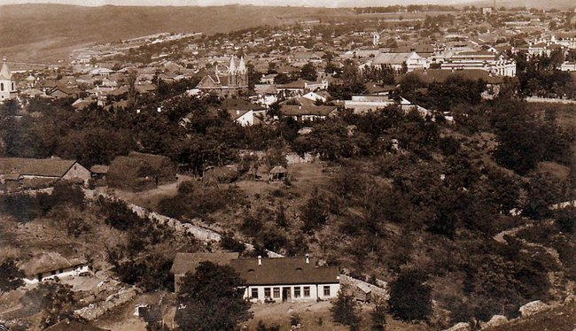
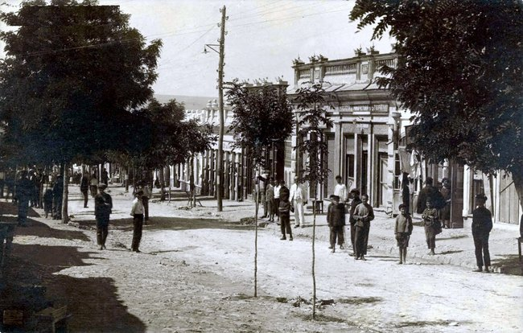
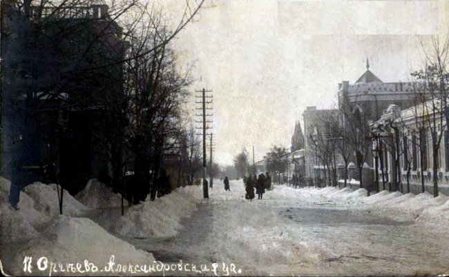

Descoperă istoria orașului Orhei
Există mai multe versiuni cu privire la originea toponimului Orhei. Potrivit lui Iorgu Iordan, numele orașului vine din ungurescul vár + hely (cetate + loc) , însemnând „loc al cetății", cu sensul „locul unde era o cetate". Numele se trage de la ostașii secui pe care voievozii Moldovei îi stabiliseră aici în drumul tătarilor, care stăpâniseră cetatea între 1224 și 1359. Alți cercetători sunt de părere că toponimul Orhei este de provenienţă turanică, iar „orga” înseamnă reşedinţa hanului.
Inițial Orheiul a avut o altă vatră, în prezent cunoscută sub numele de Orheiul Vechi, care în primele decenii ale secolului al XVI-lea a fost părăsită. Orheiul Vechi este situat la 18 km distanță, spre Sud–Est de orașul Orhei, între satele Trebujeni și Butuceni.
În 1223 hoardele tătare trec Nistrul, călăresc în sus pe Răut jefuind satele și dau de această vale prielnică de la cotitura râului. Cotropitorii n-au stat aici mult timp (deceniile 4-6 ale secolului XIV), dar au reușit să imprime localității o înfățișare orientală. Tătarii au înălțat o moschee, un caravan-sarai, mausolee-mazare. Pe această palmă de pământ, pe ruinele orașului de tip oriental, la începutul secolului XIV a apărut Orheiul Vechi, care a întrat în componența statului feudal moldovenesc întemeiat în 1359. Însă, prima atestare documentară a Orheiului Vechi datează din 1470. Astfel, la 1 aprilie 1470 este menţionat documentar numele primului pârcălab de Orhei, Radu Gangur, în contextul finalizării lucrărilor de construire a cetăţii Orhei, edificarea căreia a început odată cu urcarea lui Ştefan cel Mare (1457) pe tronul Moldovei.
În anul 1499, în urma unei invazii a tătarilor, atât târgul, cât şi cetatea au fost arse şi distruse. În anul 1533, după două mari incursiuni devastatoare, târgul Orheiului s-a strămutat într-un loc mai liniştit şi mai îndepărtat de căile de comerţ şi de atacurile tătarilor. Prima mărturie documentare referitoare la Orhei pe locul actual datează din 1554 din perioada domniei lui Alexandru Lăpuşneanu, când s-a lucrat la digul de la confluenţa râurilor Cula și Răut, atunci formându-se lacul din faţa localităţii. Din 1599 Orheiul este trecut în documentele oficiale ca târg, localitatea se dezvoltă devenind un centru al comerțului în regiune, iar unul din proprietarii dughenelor noi apărute este pârcălabul de atunci al Orheiului, Nicoară Donici. Târgul cunoaşte o deosebită înflorire economică în timpul domniei lui Vasile Lupu (1634-1653), care a refăcut lacul Orheiului, a construit poduri, a reamenajat mai multe străzi, a întemeiat lângă Orhei, o „slobozie”, venitul căreia revenea doamnei sale. Vasile Lupu a fost ctitorul catedralei „Sf. Dumitru”. Paul de Alep, care a trecut prin târgul Orhei în 1653 scria în jurnalul de călătorie: „casele sunt din piatră şi lemn, iar străzile pavate cu scânduri, cum erau şi la Iaşi”.
La 1835 Orheiul a devenit centru de uezd. A crescut numărul populației, a căpătat dezvoltare industria meșteșugărească. În 1902 populația orașului constituia 14.800 locuitori. Din dealul Ivanos se extrăgea cel mai bun var, cu care se face comerț întins. Orașul Orhei mai deținea fabrici mici de lumânări și mai multe tăbăcării.
În anul 1907 la Orhei este deschis un gimnaziu de fete cu 4 clase, transformat în 1910 în liceu cu 7 clase. La 25 martie 1918, cei 52 de consilieri ai Zemstvei din Orhei au votat unanim Moțiunea de Unire cu România.
Până în anul 1947 Orhei este centru de județ în componența căruia intrau raioanele Bravicea, Chiperceni, Criuleni, Orhei, Răspopeni, Rezina, Susleni și Telenești. Prin reforma administrativă din 1947 județele sunt desființate și Orheiul devine centru raional. În 1998 oraşul Orhei a devenit reşedinţa judeţului Orhei. În 2001, odată cu revenirea la raioane în calitate de unități teritorial-administrative, orașul Orhei capătă statut de centru al raionului omonim. Astăzi, Orhei este al 9-lea oraș ca mărime din Republica Moldova, cu o populație de 33 600 de locuitori, conform ultimului recensământ din 2014.
Zece curiozități despre orașul Orhei
- „Iarcașii din Orhei” sînt menționați în poemul „Dan, căpitan de plai” (1875) al „bardului de la Mircești”, Vasile Alecsandri (1821–1890).
- La 1 august 1940, după intervenția sovietică, la Orhei și-a început activitatea Organizaţia ,,Majadahonda” (numele asociat cu localitatea spaniolă, unde voluntarii orheieni au luptat în timpul războiului civil, anii 1936–1939), prima mișcare antisovietică din RSS Moldovenească. Circa 30 de tineri de la Liceul ,,Vasile Lupu” şi de la Şcoala de Fete ,,Regina Maria” din localitate, în octombrie 1940, – susținuți de profesorii lor Dumitru Munteanu, Maria Majaru, Vasile Mahu, fostul director al Liceului (1919–1938), primar al orașului Orhei (1938–1940) – au depus jurămînt de credinţă pe tricolor. Frații Anatol și Victor Guma au fost aleși lideri ai organizaţiei. S-au constituit patru echipe care inscripționau prin oraș lozinci antisovietice. Mai mult ca atît, au arborat tricolorul pe o serie de edificii administrative, inclusiv clădirile NKVD, ale comitetului raional de partid, pe fosta clădire a primăriei etc. În curînd, autoritățile alertate au anunţat că ,,organizaţia naţionalistă contrarevoluţionară, teroristă” a tineretului din Orhei a fost deconspirată şi înlăturată. În iunie 1941, la Chişinău, Tribunalul Districtului Militar Odesa a condamnat la pedeapsă capitală prin împuşcare o parte din tinerii considerați ,, spioni şi trădători de ţară” şi ,,duşmani ai poporului”. O parte dintre cei condamnaţi au fost îmbarcaţi în trenuri marfare, iar penitenciarul din Orhei a fost incendiat, 11 tineri rămaşi în clădire au ars de vii. Cei care la acel moment nu atinseseră majoratul au fost condamnaţi la privaţiune de libertate pentru o perioadă cuprinsă între 10 și 25 de ani. Doar Oleg Frunză a supraviețuit în gulagurile sovietice, stabilindu-se ulterior cu traiul în România (după dr. conf. univ. Valentin Burlacu).
- Monumentul lui Vasile Lupu este unul din elementele simbolice ale orașului Orhei. Sculptura din bronz îl are drept autor de profesorul bucureștean Oscar Han (1891–1976), monumentul, realizat la Turnătoria „I. Guran” din București, a fost inaugurat la 11 noiembrie 1937, fiind direcționat spre Chișinău. În 1940, împreună cu monumentul lui Ștefan cel Mare, a fost evacuat la Vaslui, iar la 1942 a fost readus în Orhei. În 1944 a fost demontat și evacuat la Craiova, la fel cu monumentul lui Ștefan cel Mare. S-a pus problema topirii acestor opere de sculptură. S-a reușit evitarea distrugerii acestor monumente printr-un tertip. Despre monumentul lui Vasile Lupu s-a afirmat că este al hatmanului Bogdan Hmelnițki (1595–1657)… O perioadă a fost plasat în curtea Bisericii „Sfîntul Dumitru”. Din anul 2001 se află în fața Consiliului Raional Orhei. Se zice că în consiliul local reprezentantul bisericii a fost de acord condiționat cu transferul monumentului din curtea bisericii…, ca acest monument să nu fie înlocuit cu cel al lui V.I. Lenin…
- Între anii 1945–1964, proiectul de sistematizare a orașului Orhei a fost elaborat de Robert Curț (17.12.1911, Vladikavkaz, Osetia de Nord – 24.04.1980, Chișinău), arhitectul-șef al orașului Chișinău (1944–1951) și al „Moldghiprostroi” (1951–1971). Tot R. Curț este și arhitectul monumentului lui Vasile Lupu.
- În 1973, în Orhei funcționau 10 instituții preșcolare; șapte școli de cultură generală, în care erau educați 1 640 de copii; cinci școli medii, o școală de opt ani și o școală primară. În aceste instituții activau 323 de învățători și 5154 elevi. La Școala Pedagogică învățau 589 de studenți, iar la cea de medicină – 481.
- În prezent, orașul trece printr-o epocă de salubrizare. Niciodată orașul nu a fost atît de bine îngrijit și întreținut. Localitatea a fost ornată cu spații verzi, iluminată, s-au reparat drumuri. Acest lucru, este adevărat, se constată, în mod special, în zona centrală a urbei. Pe măsură însă ce te îndepărtezi de raza centrală a orașului, lucrurile ușor se modifică...
- Se constată o stare de nervozitate, spirit nervos, care marchează Orheiul. Dacă dorești să fotografiezi Primăria Orhei, dintr-o simplă curiozitate, ca turist, te poți aștepta la un paznic agitat care va încerca disperat să afle „ieșirile” fotografului… Oamenii își ascund fețele atunci cînd încerci să surprinzi zonele publice în obiectivul aparatului de luat vederi. Pe pereții Complexului Sportiv Raional poți „lectura” o inscripție cu caracter duplicitar: de unitate, însă și cu nuanțe revoluționare. Este vorba de deviza bilingvă, despărțită de Stema de Stat a Republicii Moldova, „Toți pentru unul și unul pentru toți/Один за всех и все за одного”. Deasupra acestui text este scris „Moldova/Orhei”. Stadionul, în esență, constituie un spațiu ce instigă la revoltă, violență.
- Liceul Teoretic „Onisifor Ghibu”, înființat în orașul Orhei în anul 1993, este prima instituție de învățămînt din Republica Moldova acreditată la nivelul învățămîntului gimnazial și liceal la profilul umanistic și real (2003). Școala nu dispune de clase primare (clasele I–IV). Instituția a fost absolvită de 2 300 de tineri, 18 promoții de bacalaureat, care ulterior s-au manifestat/se manifestă activ în viața politică, administrativă, culturală etc. În prezent, numărul total al elevilor din școală se cifrează la 386. Instituția dispune de șapte table interactive și cabinete multimedia (donate de Coreea de Sud). Liceul este singura instituție din oraș care nu a beneficiat de sprijinul Primăriei. În instituția de învățămînt nu se percep taxe suplimentare. Singura cheltuială acoperită de părinți o constituie angajarea îngrijitoarei de spații. Eugenia Bulat, directoarea școlii din 1993, conduce cu dăruire un colectiv format din 34 de profesori, inclusiv șase cu grade didactice superioare.
- Orheiul este printre puținele localități din Republica Moldova care dispune de o cronică întreținută cu acuratețe de către o persoană avizată. Este vorba de jurnalul elaborat din iunie 1987 de către muzeograful și istoricul Valentin Golub. Autorul, în virtutea activității profesionale pe care a exercitat-o cu multă însuflețire, fiind director (1987–2006), muzeograf (2006 – 2016) la Muzeul de Istorie și Etnografie din orașul Orhei (instituția muzeală activează din 8 octombrie 1954, în fosta casă particulară a inginerului serviciului tehnic al prefecturii Orhei, Mircea Bengulescu), a inclus informații complexe din toate dimensiunile vieții publice și private a localității și a regiunii Orhei.
- Valentina și Alexandru Radu reprezintă un simbolul socio-identitar al orașului Orhei. Foștii profesori, cu o vestimentație specifică, parcurg zilnic un itinerar identic pe străzile urbei. Au un program relativ fix, cuplul admirînd monumentele de istorie, artă și arhitectură ale orașului și întreținînd discuții din marea lor poveste de viață decursă, în mare parte, în perimetrul Orheiului.